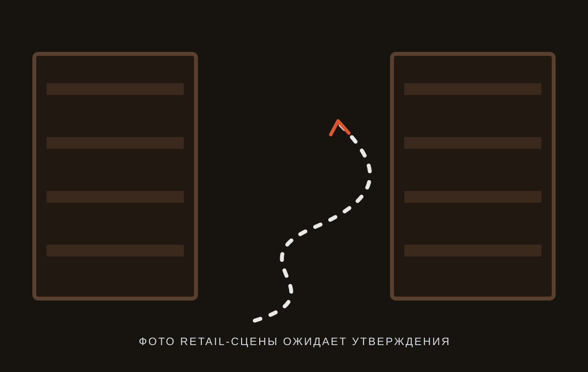

Есть конкретная проблема
Разбор проблемы в магазине
Найду причину и дам конкретный план решения.
от 12 000 ₽Что входит →Системный взгляд на работу магазина
Продажи, товар, персонал, управление, маркетинг и ИИ. Практические разборы и инструменты для магазина непродовольственных товаров.

Следим за покупателем.
Ищем, что исправить.
Карта магазина
Конверсия, средний чек, товары в чеке и работа продавца.
ДалееНеликвид, оборачиваемость, остатки и ассортимент.
ДалееПоведение, путь клиента, лояльность и повторные покупки.
ДалееСтандарты, мотивация, обучение и управление командой.
ДалееПоказатели, планирование и контроль решений.
ДалееПривлечение, акции, локальный трафик и воронки.
ДалееИИ в конкретных задачах магазина и рутине директора.
ДалееГотовый инструмент
Метод «4 точки диагностики»
Практический HTML-гайд и дашборд для сравнения двух периодов и поиска точки, требующей внимания.
Стоимость уточняется перед публикациейПодробнее об инструментеСхема интерфейса без вымышленных KPI
Работа со мной
Опишите, что происходит в магазине. Сначала я определю, где искать причину и какой объем работы действительно необходим.
Описать задачу →Есть конкретная проблема
Найду причину и дам конкретный план решения.
от 12 000 ₽Что входит →Не понимаю, где магазин теряет прибыль
Продажи, товар, закупки, персонал, торговый зал, маркетинг и управление.
от 25 000–35 000 ₽Что входит →Знаю проблему, но нет порядка
Разработаю правила, определю ответственность, контроль и рабочие инструменты для решения конкретной задачи.
от 30 000 ₽Что входит →